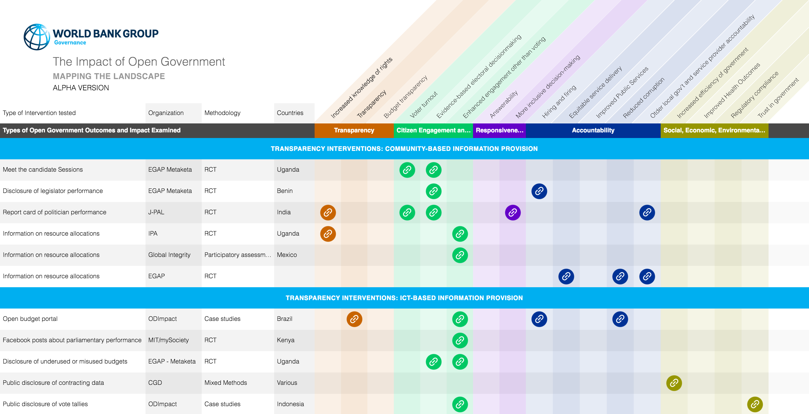
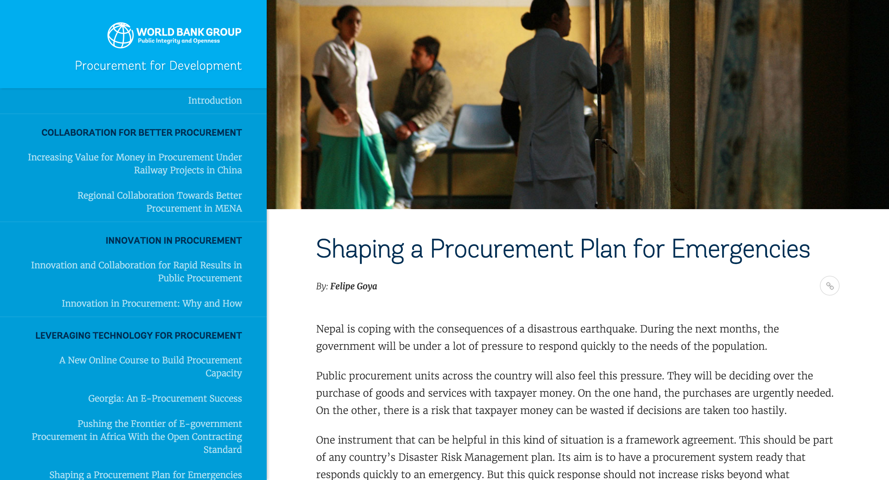
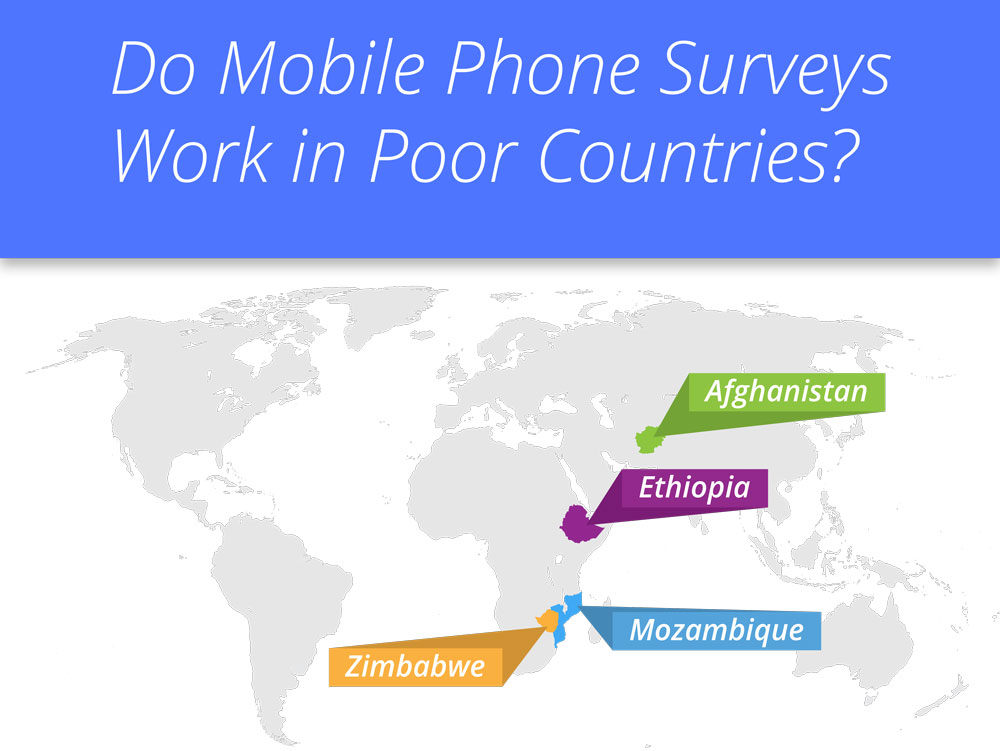
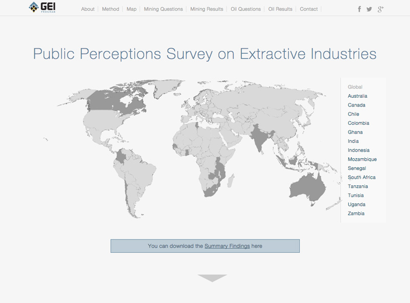
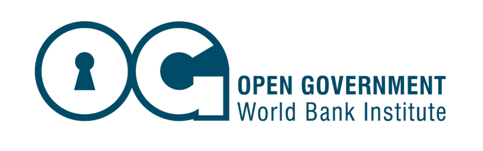
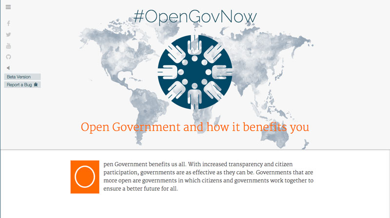
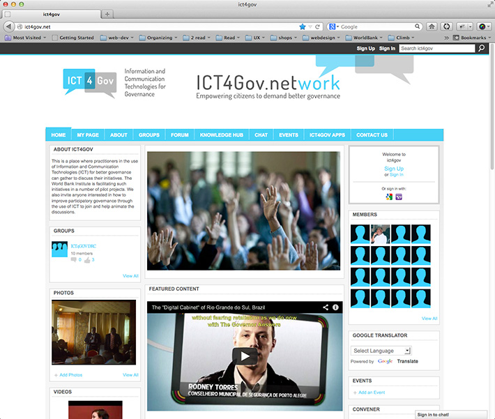

Wroking with the WorldBank, since 2011 as Art Director and Developer. Responsible for designing Open Government communication material, brands and web products.
Data Analytics for Procurement
Logo and branding for the Data Analytics for Procurement
Open Government Impact
Design and development for the open Government Impact Website
Digital Engagement
Logo and branding for the Digital Engagement Initiative
Procurement Stories
Design and development for the Transforming Procurement Website
Infographic
GEI Website
Governance for Extractives Industries
Open Government
Logo and website design for the Open Government Initiative
ICT4Gov
Logo and Website for the ICT4Gov program at the World Bank - 2011
This is a retired project.
Logo Created for the ICT4Gov Project
Interface design and development